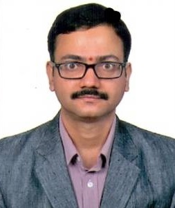

Researcher in Natural Language Processing, Computational Linguistics, Language Technology & Text Processing — with 25 years across teaching, applied research and cross‑disciplinary AI collaboration.
CVR College of Engineering · Hyderabad, India

I work as Associate Professor in the Department of CSE (Data Science) at CVR College of Engineering, Hyderabad, India. My research spans Natural Language Processing, Computational Linguistics, Language Technology and Text Processing — with a particular focus on low‑resource Indian languages.
Associate Professor Current
CVR College of Engineering, Hyderabad
January 2023 — Till date
Professor & Head
Sree Dattha Engineering College, Hyderabad
February 2022 — December 2022
Professor & I/C Head
CMR Technical Campus, Hyderabad
July 2017 — January 2022
Professor & I/C Head
Anurag Group of Institutions, Hyderabad
December 2014 — June 2017
Assistant Professor
Matrusri Institute of PG Studies, Hyderabad
June 2007 — August 2014
Assistant Professor
Nalla Malla Reddy Engineering College, Hyderabad
February 2007 — June 2007
Lecturer
Andhra Vidyalaya, Hyderabad
July 2001 — February 2007
No entries match your search.
Best Researcher Award
Awarded by CSI Hyderabad, 11 July 2026
Innovative Teaching Excellence Award
Awarded by AIMERS, 05 September 2024
Top 3 Performance Award
Virtual Labs, IIIT Hyderabad